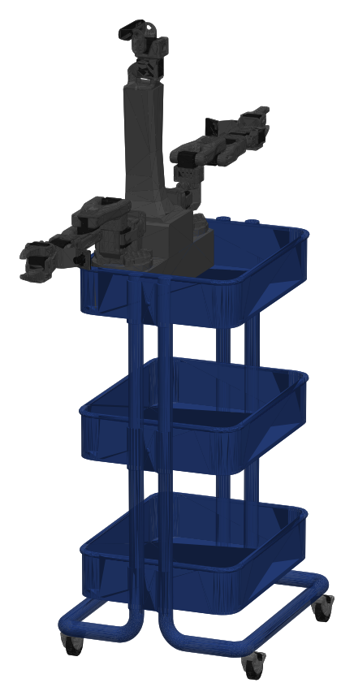
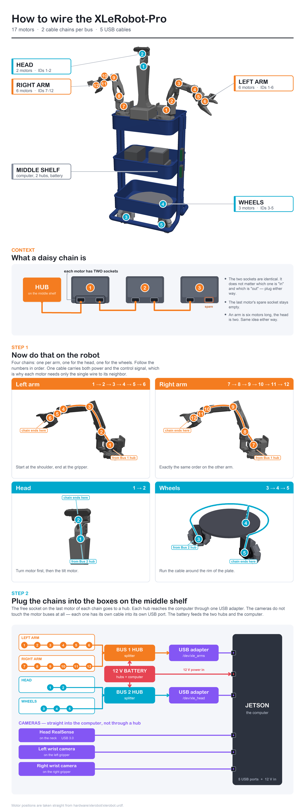

Build Guide
Put the robot together, wire its 17 motors, and check each one answers.
1. Build overview
You'll build two SO-101 arms, a neck and head, and an omni-wheel base.
They mount on an IKEA RÅSKOG cart, with an NVIDIA Jetson Orin Nano Super on a printed open frame at its center.

All 17 motors run on two buses: Bus 1 for both arms (/dev/xle_arms, 12 motors) and Bus 2 for the head and wheel base (/dev/xle_head, 5 motors). Older guides describe a 3-bus layout; it is superseded, so follow this page.
Build order
- Print all parts (files and print settings on Components)
- Assemble both SO-101 arms
- Install wrist camera mounts and grippers
- Assemble cart and wheel base
- Assemble neck / top base / head
- Configure motor IDs, one motor at a time, before final assembly
- Mount Jetson and route wiring
- Final mechanical assembly and cable management
- Bus verification and calibration
- Software setup: install the stack and run the robot
Do step 6 before you close up the arms. Setting IDs afterwards means taking the robot back apart.
2. Assembly
Follow the walkthrough video. The notes below cover the steps where order matters.
A) Cart
Assemble the IKEA RÅSKOG cart first. Do not finalize cable routing yet: leave access for motor extensions, USB data, power, and camera cables.
B) Arms (joints 1–5)
Assemble both SO-101 follower arms using this video.
Wrist and gripper order matters:
- Before attaching the gripper to joint 5, install the wrist-camera mount on the gripper.
- Install the gripper claw/fingers.
- Use the follower gripper approach on both arms.
C) Neck (top base and head)
Assemble the Top Base and Head. The hollow neck doubles as a cable channel.
D) Wheels and wheel base
- Keep omni-wheel orientation and order exactly as documented.
- Use two nuts per wheel bolt. Tighten the first nut, then tighten a second nut against it. A single nut works loose from the vibration of driving.
- Use motor cable extensions; do not rely on short direct runs.
- Leave slack, and mount the top plate and connectors only after you have checked the cable routes.
E) Put it together on the cart
Bring the arms, neck, and wheel base together on the cart. Secure each main shoulder with a screw and two nuts: pass the screw down through the arm base and the cart shelf, thread two nuts on from underneath, and tighten the second against the first.
3. Motor configuration and IDs
Set every motor's ID before final cable management and hard mounting. Many servos ship with default ID 1, so each ID must be unique per bus.
If two motors share an ID, the whole chain stops answering, even though each motor works on its own. A right arm shipped as IDs 1–6 duplicates the entire left arm.
Before you start
- Install the base software. Software setup steps 3–5 are enough to run these tools.
- Grant serial access, or every command below fails with
Permission denied. - Use raw port names here:
/dev/ttyACM0, not/dev/xle_arms(macOS:/dev/tty.usbmodem*). The friendly names are created later, in software step 7.
$ sudo usermod -aG dialout $USER
# log out and back in for this to take effect
# just for this boot, if you cannot log out right now:
$ sudo chmod 666 /dev/ttyACM0ID plan
| Bus | IDs | Mapping |
|---|---|---|
| Bus 1 (both arms) | 1–12 | 1–6 left arm, 7–12 right arm, shoulder to gripper |
| Bus 2 (head and wheels) | 1–5 | ID 1 = tilt (up/down), ID 2 = pan (left/right), 3–5 wheels |
Step 1: Scan what is on the bus
This finds every motor on a port, at any baud rate and any ID. Model 777 is the STS3215.
# Which serial ports exist right now?
$ ls /dev/ttyACM*
# List every motor answering on a bus, at any baud rate
$ python -c "from lerobot.motors.feetech import FeetechMotorsBus; \
print(FeetechMotorsBus.scan_port('/dev/ttyACM0'))"Step 2: Write one ID at a time
set_motor_id.py reprograms whatever answers. With other motors attached, it can rewrite a working joint.
# Identify active serial ports
$ lerobot-find-port
# ONE motor connected. Assign its ID from the table above.
$ python set_motor_id.py --port /dev/ttyACM0 --id 7
# Non-STS3215 motor? name the model explicitly:
$ python set_motor_id.py --port /dev/ttyACM0 --id 7 --model scs0009--model defaults to sts3215, which this build uses throughout.
- Isolate one motor. Start with the highest ID and work down (12, 11, 10 …), so a stray reconnection cannot create a duplicate.
- Confirm its current ID with a scan.
- Write the correct ID.
- Add motors back and re-scan as you go. A complete chain lists every ID with no gaps; a missing number tells you which motor or cable to check.
- Label every motor and both ends of every cable:
L-1…L-6,R-7…R-12,H-1…H-2,W-3…W-5.
4. NVIDIA Jetson placement
Mount the Jetson in the center rack, between the base and the top plate.
- Keep mass low for stability.
- Keep USB ports accessible.
- Keep cables short to the two motor control boards, the head camera, and the power station (plus the wrist cameras, if you add them).
Behind a hub, the adapter looks connected but its bus does not show up.
5. Wiring (2-bus)
Seventeen motors, four daisy chains, two bus hubs, and three USB cables to the Jetson (five with the optional wrist cameras).

A) Motor wiring
One cable carries both power and signal, so each motor connects only to its neighbor. The first motor in each chain plugs into its bus hub. Either socket on a motor works; the last motor's spare socket stays empty.
| Chain | Order | Notes |
|---|---|---|
| Bus 1: Left arm | 1, 2, 3, 4, 5, 6 | Shoulder to gripper; into the Bus 1 hub |
| Bus 1: Right arm | 7, 8, 9, 10, 11, 12 | Same order; into the Bus 1 hub |
| Bus 2: Head | 1, 2 | ID 1 is tilt (up/down), ID 2 is pan (left/right) |
| Bus 2: Wheels | 3, 4, 5 | Around the rim of the wheel plate; use extensions up to the middle shelf |
Power the head and check that ID 1 moves up/down and ID 2 moves left/right. If they are swapped, the arm reaches for the wrong place.
Cable routing
- Leave a service loop at every rotating joint. Without slack, the cable pulls on its connector when the joint moves and the bus drops.
- Re-seat the first link first. When a bus misbehaves, check the cable from the adapter to the first motor.
- Avoid tight bends near connectors, keep cables away from pinch points, and make them slightly longer than you think you need. US builders will likely crimp their own (see the sourcing note on Components).
B) Power wiring
Servo power, Jetson power, and USB are three separate things. The USB cables between the Jetson and the bus boards carry data only; all power comes from the power station.
| Rail | Feeds | Requirement |
|---|---|---|
| Compute | Jetson carrier | Its own USB-C outlet, through the USB-C to DC5525 PD cable into the barrel jack |
| Servo: arms | Bus 1, 12 motors | The 12 V car outlet, through the car-socket to DC5521 cable |
| Servo: head/base | Bus 2, 5 motors | Its own USB-C outlet, through the USB-C to DC5521 PD cable |
| Adapter boards | Bus transceivers | Barrel jack on each board |
- Mount the Anker SOLIX C300 DC power station (2.8 kg) low in the cart, with strain relief on every cable that leaves it.
- The build adds no fuses: each outlet shuts off on overload. If you change the torque settings in
firmware_limits.py, re-check the arm bus against its 5 A budget.
These are the 12 V STS3215s. Power Bus 1 from the 12 V car outlet and Bus 2 through the USB-C PD cable in the BOM, not a plain 5 V USB-to-barrel cable. A lit LED on the adapter board does not mean the servos have power.
C) Camera wiring
Each camera plugs into its own USB port on the Jetson, never into a bus hub.
- Wrist cameras (×2): route each cable along its arm with full-motion slack; secure at intervals; keep compute-end connectors accessible.
- Head camera (RealSense): route through the hollow neck into a USB 3.0 port; leave pan/tilt slack at the head joint.
6. Final assembly
- Complete wiring and cable management before clamping the top base into the cart.
- Clamp the arms onto the cart corners after route verification.
Do not push the fully assembled robot like a normal cart; lifting it protects the motor gears.
Final checklist
Mechanical and power
- Jetson mounted securely
- Battery secured and upright
- No cable pinch points
- Full arm range without cable snagging
- Wheel base rotates freely
Electrical and sensing
- Both buses configured and tested independently
- Motor IDs verified: 1–12 on Bus 1, 1–5 on Bus 2
- Motor directions verified
- Head axes confirmed: ID 1 up/down, ID 2 left/right
- Both wrist cameras detected
- Head camera detected
7. Calibrate and validate
Calibrate once for the whole robot, then check that it moves as expected.
- The software stack is installed (software steps 3–6).
- The bus symlinks
/dev/xle_armsand/dev/xle_headexist (step 7). - Every motor answers a bus scan (step 8).
A) Run the calibration
Run python scripts/calibrate_xlerobot.py from the repo root and follow its four prompts. Software step 9 has the full procedure and the check table.
Both arms go limp and will fall from a raised pose. Support them by hand before you start, and clear anything underneath them.
B) Read back the positions
These print the calibrated positions. Nothing is commanded to move.
read_motors.py releases arm torque on purpose.
A raised arm will fall the moment it runs. Lower both arms, or hold them, before starting it.
$ python diagnostics/read_motors.py
# arm joint angles, from /dev/xle_arms
$ python diagnostics/read_head.py
# head tilt and pan, from /dev/xle_headC) First commanded motion
Start with the wheels, then move the arms.
# wheels only. Arms are never touched. A slow few centimetres.
$ python diagnostics/base_drive_check.py --vx 0.05 --seconds 2
# whole robot: both arms, head and base, on a gamepad
$ python examples/5_xlerobot_teleop_xbox_new_wiring.py_new_wiring variant.
The plain 5_xlerobot_teleop_xbox.py opens /dev/xle_right and /dev/xle_left, ports that do not exist on this build. Details in software setup step 11.
D) Check reach accuracy
If the gripper misses a known point by more than a couple of centimeters, look for loose servo horns, a stripped gear, or a bent bracket. The First Reach Tutorial walks through this check.
# pose the gripper by hand on a known point;
# prints joint angles and the model's EE position for them
$ python diagnostics/measure_ee.pymeasure_ee.py hardcodes PORT = "/dev/ttyACM0" near the top of the file. Change it to /dev/xle_arms for this build.
E) Camera bring-up
$ v4l2-ctl --list-devices
$ python examples/9_dual_wrist_camera.py
$ rs-enumerate-devices- Every arm joint moves in the expected direction.
- Head tilt and pan move on the expected axes.
- Wheels drive and stop reliably.
- All three camera streams open.
- Mirrored joints agree within a few percent.